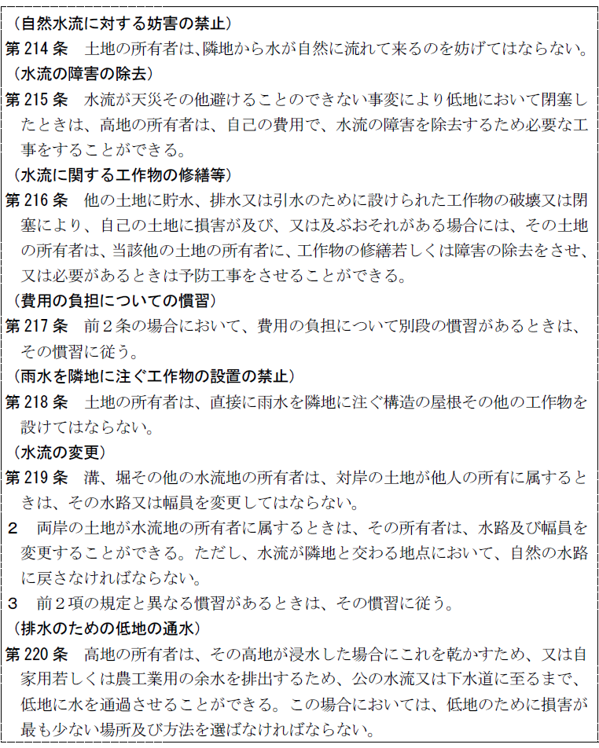
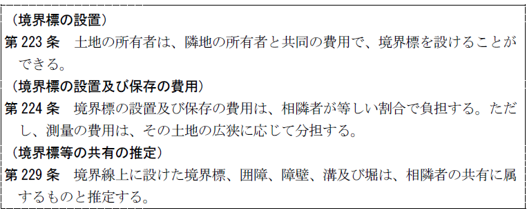

第２編 物権
第３章 所有権
第１節 所有権の意義
1. 全面的支配権
他の物権がある一定の限られた範囲において物を支配する権利であるのと異なる。
2. 恒久性
存続期間は予定せられることはない。また消滅時効にもかからない。
3. 客体は物
1. 所有権の基本的原則－使用・収益・処分
法令の制限内において、自由に物を使用・収益・処分することができる。
現在は、所有権絶対の原則は修正されている。
2. 所有権の行使に対する制限
① 権利濫用の禁止（１条３項）
② 法令による制限（206条）
③ 土地所有権の範囲
ⅰ 法令の制限内において、その土地の上下に及ぶ（207条）。
ⅱ 地下水は土地の構成部分とみて、土地所有権の内容をなす。
第２節 相隣関係
相隣関係：相近接する不動産所有権の相互の利用を調整することを目的とする関係
隣接する不動産所有権の共存の目的のため法によって当然に生ずる所有権内容の制限と拡張であり、地役権が所有者間の契約によって生ずるのとは異なる。そして、この関係は地上権に準用されている（267条）。通説は永小作権や土地賃借権についても、規定はないが準用すべきものと解している。
1. 隣地の使用（209条）
(1) 隣地の使用
土地の所有者は、次に掲げる目的のため必要な範囲内で、隣地を使用することができる（209条１項本文）。「使用することができる」とは、隣地所有者等の明示的承諾がなくても使用することができるという意味である。
ただし、住家については、その居住者の承諾がなければ、立ち入ることはできない（209条１項ただし書）。
① 境界又はその付近における障壁、建物その他の工作物の築造、収去又は修繕
② 境界標の調査又は境界に関する測量
③ 民法233条３項の規定による枝の切取り
(2) 隣地使用の要件
上記（1）の使用をするには、以下の要件を守らなければならない。
(a) 使用の日時、場所及び方法は、隣地の所有者及び隣地を現に使用している者（以下「隣地使用者」という。）のために損害が最も少ないものを選ぶこと（209条２項）
(b) あらかじめ、その目的、日時、場所及び方法を隣地の所有者及び隣地使用者に通知すること（209条３項本文）
ただし、あらかじめ通知することが困難なときは、使用を開始した後、遅滞なく、通知すればよい（209条３項ただし書）。
(3) 損害が発生した場合の償金請求権
隣地の所有者又は隣地使用者が（1）の使用によって損害を受けたときは、その償金を請求することができる（209条４項）。
2. 公道に至るための他の土地の通行権（囲繞地通行権、210条～213条）
(1) 袋地・準袋地の場合
袋地の所有者は公道に至るための他の土地の通行権を有する（210条）。そして、袋地の所有者が、他の土地の所有者に対して、公道に至るための他の土地の通行権を主張するには登記を要しない（最判昭47.４.14）。
(a) 通行の方法
公道に至るための他の土地の通行権を行使する場合の通行の場所及び方法は、通行権を有する者のために必要であり、かつ、他の土地のために最も損害が少ないものを選ばなければならない（211条１項）。必要があるときは、通行権者は通路を開設できる（同条２項）。
(b) 償金支払義務
通行権者は、通行する他の土地の損害につき償金を支払わなければならない（212条本文）。その場合、通路開設のために生じた損害については一時に支払うことを要するが、その他の損害については１年ごとに支払うことができる（212条ただし書）。
この償金の支払を怠っても通行権自体は消滅せず、債務不履行責任を生じるにとどまる。
(2) 共有物の分割又は譲渡によって生じた袋地の場合
(a) 通行できる土地
共有物の分割又は一部譲渡によって袋地が生じた場合には、袋地所有者は分割者の土地ないし譲渡人の土地のみを通行できる。そして、この場合には償金を支払うことを要しない（213条）。分割・譲渡の価格決定にあたり考慮されているとみるものである。
(b) 分筆後の囲繞地の特定承継人
共有物の分割又は土地の一部譲渡により袋地が生じた場合には、通行の対象となる土地（囲繞地）に特定承継が生じても、袋地所有者は、その特定承継人に対して213条に基づき、通行権を主張することができる（最判平２.11.20）。
1. 継続的給付を受けるための設備の設置権等（213条の２、213条の３）
(1) 意義
土地の所有者は、他の土地に設備を設置し、又は他人が所有する設備を使用しなければ電気、ガス又は水道水の供給その他これらに類する継続的給付（以下「継続的給付」という。）を受けることができないときは、継続的給付を受けるため必要な範囲内で、他の土地に設備を設置し、又は他人が所有する設備を使用することができる（213条の２第１項）。また、この権利を有する者は、他の土地に設備を設置し、又は他人が所有する設備を使用するために当該他の土地又は当該他人が所有する設備がある土地を使用することができる（213条の２第４項）。
電気などの現代的なライフラインに関する規定がなかったため、創設された。この設置権が発生する場合、他の土地の所有者は設備の設置等を受忍する義務を負うこととなる。
(2) 要件
(a) 方法等の相当性
設備の設置又は使用の場所及び方法は、他の土地又は他人が所有する設備（以下「他の土地等」という。）のために損害が最も少ないものを選ばなければならない（213条の２第２項）。
(b) 通知
（1）により他の土地に設備を設置し、又は他人が所有する設備を使用する者は、あらかじめ、その目的、場所及び方法を他の土地等の所有者及び他の土地を現に使用している者に通知しなければならない（213条の２第３項）。
(3) 償金の必要性
(a) 設備設置権者の償金支払義務
ⅰ 設備設置のために一時的に他の土地を使用する際に当該土地の所有者・使用者に生じた損害（213条の２第４項、209条４項）
ⅱ 設備の設置により土地が継続的に使用することができなくなることによって他の土地に生じた損害（213条の２第５項）
(b) 設備使用権者の償金支払義務等
ⅰ 設備使用のために一時的に他の土地を使用する際に当該土地の所有者・使用者に生じた損害（213条の２第４項、209条４項）
ⅱ 設備の使用を開始するために生じた損害（213条の２第６項）
ⅲ 利益を受ける割合に応じた設備の設置、改築、修繕及び維持に要する費用の負担（213条の２第７項）
(c) 支払方法
償金は一括払いが原則であるが、上記（a）ⅱの費用のみ１年ごとに支払うことができる（213条の２第５項ただし書）。
(4) 分割又は一部譲渡によって他の土地に設備を設置しなければ継続的給付を受けることができない土地が生じた場合
分割又は土地の一部譲渡によって他の土地に設備を設置しなければ継続的給付を受けることができない土地が生じたときは、その土地の所有者は、継続的給付を受けるため、他の分割者又は譲渡人の所有地のみに設備を設置することができる。この場合、213条の２第５項の規定による償金の支払いは不要である（213条の３第１項、同条第２項）。
2. 水流等に関する規定

1. 境界標の設置等

2. 竹木の枝の切除及び根の切取り（233条）
(1) 竹木の枝の切除
(a) 原則
土地の所有者は、隣地の竹木の枝が境界線を越えるときは、その竹木の所有者に、その枝を切除させることができる（233条１項）。
(b) 自ら切除できる場合
次に掲げるときは、土地の所有者は、その枝を切り取ることができる（233条３項各号）。
① 竹木の所有者に枝を切除するよう催告したにもかかわらず、竹木の所有者が相当の期間内に切除しないとき
② 竹木の所有者を知ることができず、又はその所在を知ることができないとき
③ 急迫の事情があるとき
(c) 竹木が数人の共有に属するとき
233条１項の場合において、竹木が数人の共有に属するときは、各共有者は、その枝を切り取ることができる（233条２項）。
(2) 竹木の根の切り取り
隣地の竹木の根が境界線を越えるときは、その根を切り取ることができる（233条４項）。
第３節 所有権の取得
所有権の取得形態には、以下の２つがある。
① 承継取得
売買、相続等
② 原始取得
無主物先占（239条１項）、遺失物拾得（240条）、埋蔵物発見（241条）、添付（242条～248条）
所有者のない動産については、先に占有を取得した者が所有者となる（239条１項）。①所有者のない動産を、②所有の意思をもって占有することにより成立する。
所有者のない不動産については、国庫に帰属することになる（239条２項）。
①遺失物が拾得（埋蔵物が発見）された場合に、②遺失物法の定めるところに従い公告をした後３か月（埋蔵物の場合は６か月）以内にその所有者が判明しないときは、拾得者（発見者）がその所有権を取得する。
ただし、埋蔵物が他人の所有物から発見されたときは、発見者と所有者が均等割りで埋蔵物の所有権を取得する（241条ただし書）。
1. 意義
添付とは、付合（242条～244条）、混和（245条）、加工（246条）の総称である。
添付により、所有者の異なる数個の物が結合して１個の物となった場合に、社会経済的見地から１つの物として何人かの所有に帰属させ、復旧の請求を否定するものである。これによる当事者間の不公平については不当利得請求権の性質を有する償金請求（248条）によって救済される。
2. 態様
(1) 付合
付合には不動産の付合と動産の付合がある。
(a) 不動産の付合（242条）
付合とは、動産が不動産に付着して不動産そのものとみられるに至ることをいう。
ⅰ 要件－不動産に「物」が「従として付合した」こと
本条の客体としての「物」は動産に限られる（通説）。
「付合」の意味は243条と同義であり、その判断は、分離復旧することが社会経済上不利益であるか否かによる（通説）。
ⅱ 効果
原則として、不動産の所有者が付合物の所有権を取得する（242条本文）。
ただし、権原によって附属させた場合には例外が認められる（242条ただし書）。
権原：地上権・賃借権・永小作権のように当該不動産を利用し、物を附属させることができる法律上の地位
権原による所有権の留保が認められるのは弱い付合の場合だけである。
建物の賃借人が家主の承諾を得て増改築した場合であっても、その部分が構造上・取引上の独立性を有しない場合（強い付合）には付合が生じ、242条ただし書の適用はない（最判昭44.７.25）。
(b) 動産の付合（243条、244条）
所有者を異にする数個の動産が、付合により損傷しなければ分離することができなくなったとき、又は分離するのに過分の費用を要するときは、その合成物の所有権は、主たる動産の所有者に帰属する（243条）。
もっとも、付合した動産について主従の区別をすることができないときは、各動産の所有者は、その付合の時における価格の割合に応じてその合成物を共有する(244条)。
(2) 混和（245条）
：固形物の混合及び流動物が融和すること
動産の付合の規定（243条、244条）が準用される。
(3) 加工（246条）
：他人の動産に工作を加え別種の物件とすること
(a) 原則及び例外
加工の効果として、材料の所有者が加工物の所有権を取得するのを原則とする（246条１項本文）。
ただし、例外として、①工作によって生じた価格が材料の価格を著しく超える場合（246条１項ただし書）、②加工者が材料の一部を提供した場合であって、その材料の価格に工作によって生じた価格を加えたものが他人の材料の価格を超えるとき（246条２項）には、加工者が加工物の所有権を取得する。
(b) 建築中の建物への第三者の工事と所有権の帰属
判例は、新請負人のした工作は、動産に動産を単純に付合させるだけでそこに施される工作の価格を無視してよい場合とは異なることを理由に、加工に関する246条２項の規定に基づいて決すべきとする（最判昭54.１.25）。
(c) 建物の合体と抵当権
互いに主従関係にない甲乙２棟の建物が、工事により、１棟の丙建物となった場合、甲又は乙を目的として設定されていた抵当権は、丙建物につき甲又は乙の価格割合に応じた持分を目的とするものとして存続する（最判平６.１.25）。
3. 添付の効果
① 所有権の取得
② 償金請求権の発生（248条）